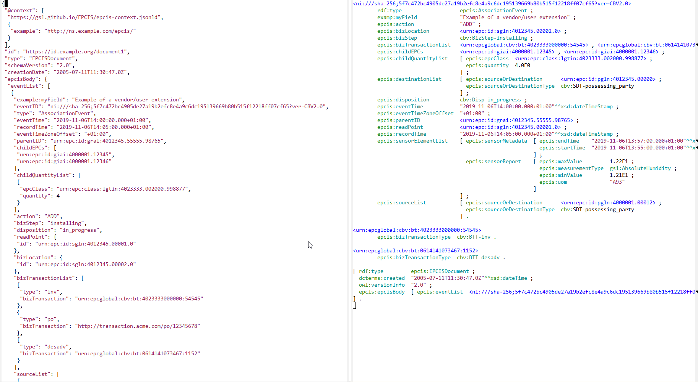

JSON-LD, YAML-LD and Polyglot Modeling
Vladimir Alexiev, Ontotext
2022-10-28, Ontotext Last Friday
Overview
JSON-LD
- Came from the desire to let devs use RDF data in an easier way
- Manu Sporny has called RDF the “Three Mile Island nuclear disaster” of the semantic web
- JSON-LD started 2010, now is a mature set of specs and implementations
- Includes
Links:
- Site: https://json-ld.org/, including publicaitons and specs
- Playground: https://json-ld.org/playground/, based on
jsonld-js, often used for testing
JSON-LD Specs
Links are to latest editor drafts:
- JSON-LD Syntax: The core spec
- JSON-LD Algorithms and API: expansion, compaction, flattening; serialization, parsing (deserialization)
- JSON-LD Framing: Framing is the 4th fundamental algorithm: which RDF data to use, what objects to embed vs to reference
- JSON-LD Best Practices: Draft
- JSON-LD Streaming: How to chunk/stream JSON; NDJSON is just one way, another is based on particular element order
- RDF
Dataset Canonicalization: Important in crypto-signing use cases.
- Difficult because blank nodes require solving the “graph isomorphism” problem
- JSON-LD-Star: How to capture RDF-star, draft
- JSON-LD CBOR: CBOR is a binary representation for JSON
- YAML-LD: YAML is a better JSON. CG started by me, see end
What JSON-LD Can Do
Map JSON to RDF and back in flexible ways:
- Interpret
any JSON as RDF by using an external Context (
Linkheader) - Map JSON objects to RDF nodes: URL is field
@id, or blank if none - Express node types:
rdf:typeis field@type, can be array - Map JSON fields to RDF props: attributes (data props) and relations (object props)
- Map some strings to individuals by using
@base - Attach datatypes to literals
- Attach lang tags to strings
- Treat JSON arrays as multivalued props (
@set, default) orrdf:List(@list) @nestextra fixed JSON props on RDF serialization, or omit JSON props on parsing- Interpret JSON props locally, based on prop path or node type (nested contexts)
- Produce and parse RDF graphs
- Group data by subject, lang tag, etc (
@container) - Alias keywords, eg
"url": "@id", "a": "@type", "lang": "@language"
What JSON-LD Cannot Do
- Clean up or reformat data
- Change fundamentally the layout of data
- Validate data (use JSON Schema, SHACL or SHEX for that)
- Concatenate fields to make a URL
- Make RDF sub-nodes
So what to do if a more complex transformation is needed?
- Use a “basic” JSON-LD context to map literals and URLs (if present)
- Convert to RDF and load it to a “staging” graph/repo
- Use SPARQL Update to reshape the data to a final graph/repo
How GraphDB Uses JSON-LD
- As data loading format and RDF output format (whole graph/repo, resource, CONSTRUCT)
- In Mongo
Connector: fetch JSON from Mongo, use it as RDF in SPARQL
- With embedded context (duplication) or URL (network) context
- But cannot use externally provided context
- Limited to JSON 1.0 (see later)
Example from GS1 EPCIS (JSON vs Turtle)

Context Examples from GS1 EPCIS
See epcis-context.jsonld or my epcis-context-simple.jsonld.
Field type means different RDF props depending on
context:
- In
sourceListit’sepcis:sourceOrDestinationType(egcbv:SDT-possessing_party) - In
bizTransactionListit’sepcis:bizTransactionList(egcbv:BTT-bol) - In
sensorReportit’sepcis:measurementType(eggs1:AbsoluteHumidity)
"@context": {
"type": "@type",
"sourceList": {
"@id": "epcis:sourceList",
"@context": [
"possessing_party": "cbv:SDT-possessing_party", ...
"type": {
"@id": "epcis:sourceOrDestinationType",
"bizTransactionList": {
"@id": "epcis:bizTransactionList",
"@context": [
"bol": "cbv:BTT-bol", ...
"type": {
"@id": "epcis:bizTransactionType",
"sensorElementList": {
"@id": "epcis:sensorElementList",
"sensorReport": {
"@id": "epcis:sensorReport",
"@context": {
"type": {
"@context": {
"AbsoluteHumidity": "gs1:AbsoluteHumidity", ...
"@id": "epcis:measurementType",Can you spot a bug above?
Allotrope Foundation
- Defines bridging between RDF and HDT5 (binary format for research & engineering data)
- Widely used in Lab Measurements community
- Hope to use for Architectural data in ACCORD
- Simplified JSON-LD representations of linked data based on Allotrope Data Models, Jindřich Mynarz, Jan Rosecký, Vincent Antonucci, Jan Nešpor Merck R&D IT Data Infrastructure. Presentation at Allotrope Connect, 20 September 2021: video, slides
Context Examples from Allotrope

Frame Examples from Allotrope

Importance of Precise JSON-LD Serializations
- Many communities base their data exchange on JSON Schema
- Yet want to have LD representation of their data
Examples:
- Decentralized Identifiers
- Verifiable Credentials
- Data Integrity
- JSON Web Signature 2020
- UNCEFACT Buy Ship Pay Reference Data Model
- Traceability in trade and logistics
- Insurance Acord model
- International Image Interoperability Framework (IIIF): Image and Presentation APIs (eg for Flemish Archive)
Example Use Cases
Eg https://jsld.org: use cases building on JSON-LD by transmute.industries
- Decentralized Identifiers
- Verificable Credentials
- Encrypted Data Vaults
- Agriculture Futures
- Incident Response
Innovations in JSON-LD 1.1
Compared to JSON-LD 1.0, 1.1 has many advanced features:
- Scoped (Nested) Contexts: localize prop definitions to prop path and/or type
- Included Nodes/Blocks: include secondary node objects in the current node
- Nested Property: add extraneous JSON prop levels not reflected in JSON
- Reverse Properties: JSON field is mapped to the inverse of an RDF prop
- Indexing of JSON by data, id, lang, graph, etc
- Framing: express which RDF data to pick and how to lay it out
… too numerous to list all.
JSON-LD Conformance Tests
Best feature of W3C specs: accompanied by Implementation Reports
- JSON-LD 1.1 Processor Conformance
- Generated from EARL results from the JSON-LD 1.1 Test Suite
- EARL is an ontology to capture rest results
- Test subjects:
- JSONLD (Perl)
- guile-jsonld (GNU Guile)
- jsonld.js (JavaScript)
- PyLD (Python)
- Titanium (Java)
- Sophia (Rust)
- JSON-goLD (Go)
- JSON::LD (Ruby)
- jsonld-streaming-parser & serializer (JavaScript)
- rdf-parse (JavaScript)
- Task KGS-70, earl-report#6
to add a summary table at end
- Please volunteer! Need to learn a bit of HAML (HTML abstraction markup language)
JSON-LD Conformance Results

JSON-LD Support in RDF4J & GDB
- RDF4J supports only JSON-LD 1.0 through
jsonld-java(rdf4j#3654)- Need to add Titanium JSON-LD for JSON-LD 1.1 support
- Titanium performance improved 2x from 03.12.2020 to 02.04.2022
- But is still 4.6x slower than
jsonld-java - So need to keep both libraries, and select based on request header or other options
- Tracked as GDB-7322 1.1 support; GDB-7324 conformance testing
- RDF4J can specify context for serialization, but doesn’t expose it
through request header
- Which context and frame to use: asked w3c/json-ld-framing#133
- Jena has integrated Titanium (JENA-1948): reading is done, writing is in progress (JENA-2153)
New Community Group: YAML-LD
- JSON is nice: devs love it
- It’s easy to use in apps
- But YAML is nicer: both devs and data archtects love it
- As easy to process as JSON
- Much easier to read than JSON: goes away with the curlies and most of the quotes
- Yet, YAML is a superset of JSON as it can:
- Have anchors and references -> reuse YAML pieces
- Use object as key (fields not limited to strings) -> RDF-star
- Declare tags eg
!xsd!date 2022-10-28-> datatypes - Have multiple docs in a file (stream) -> multiple named graphs in a file
So I started thinking about YAML-LD: w3c/json-ld-syntax#389
YAML-LD Community Group
- Initiated by Vladimir Alexiev
- Constituted by Gregg Kellogg as part of the JSON-LD WG
- Github: https://github.com/json-ld/yaml-ld/
- Issues: 49.
- I made 16 and contributed to maybe 20 more
- yaml-ld#2: Use Case Requirements, recorded 14 UCRs
- YAML-LD spec (very draft)
YAML-LD Examples
- Use tags for datatypes
dc:date: !xsd!date 2022-05-18 # short form
dc:date: # subfields (long form)
@type: xsd:date
@value: 2022-05-18- Use
$instead of@: more dev-friendly
"@context":
"@sigil": $
$base: http://example.org/resource/
$vocab: http://example.org/ontology/
$graph:
$id: bart
spouse: marge- Object keys for RDF-star
{$id: bob, age: 42}: {certainty: 0.8} # very natural!
$id: bob
age:
$value: 42
$annotation: # new keyword (long form)
certainty: 0.8Polyglot Modeling
- WHO: As an information architect
- WHAT: I want data modeling language(s) independent of technical artefacts
- SO THAT:
- the language is understandable to domain experts
- it can generate a variety of required technical artefacts
- all these artefacts are kept in sync, thus lowering maintenance effort
Multiple Schema Technical Artefacts
For efficient RDF modeling, you need to define multiple related artefacts:
- ontology
- shapes (SHACL or SHEX)
- diagrams and other documentation
- JSON-LD context,
- maybe JSON-LD frames,
- JSON schema or Avro schema
- API bindings and hypertext controls (HATEOAS)
- etc
JSON Schema vs JSON-LD Context
Efforts to marry JSON Schema with JSON-LD contexts have been undertaken in:
- W3C Credentials CG
- Web of Things: WoT JSON Schema, Hypermedia vocabulary
- OpenAPI: OpenAPI-Specification, OAS Semantic Context, in particular for eGovernment APIs
Examples of Polyglot Frameworks
Many are YAML-based:
- LinkML (github)
- HL7 FHIR (not YAML-based)
- ShExC/ShExJ/ShExR, now YAML (ShExY?)
- Schema Salad
- A.ML and cloudinformationmodel
- RAML (RESTful API Modeling Language), RAML spec
- Dragon at Uber, eg Dragon:
Schema Integration at Uber Scale (cached
PDF).
- YAML schema examples start slide 42
- SOML
for Semantic Objects, Semantic Search (Ontotext)
- Maybe Ontotext Reconciliation servers can be built on this?
- smart-data-models
(FIWARE, IUDX, SmartCities, TM forum).
- Example: Aircraft. contribution manual gslides
Links
- My publications
- This presentation: JSON-LD and Polyglot Modeling
- Decentralization and Self-Sovereignty: presentation and gdoc